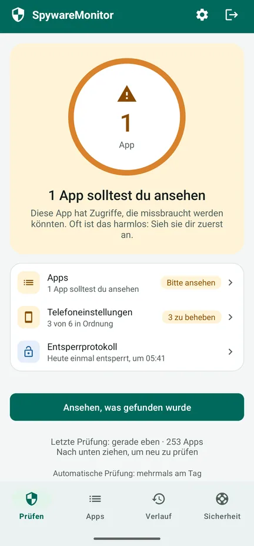
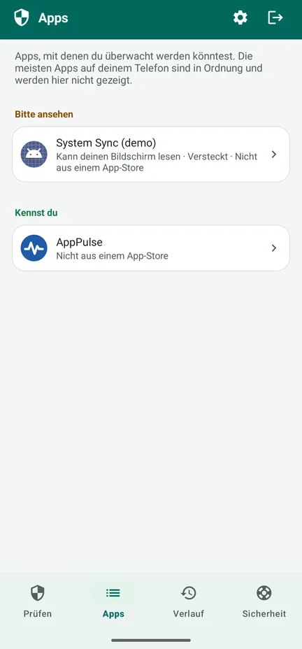
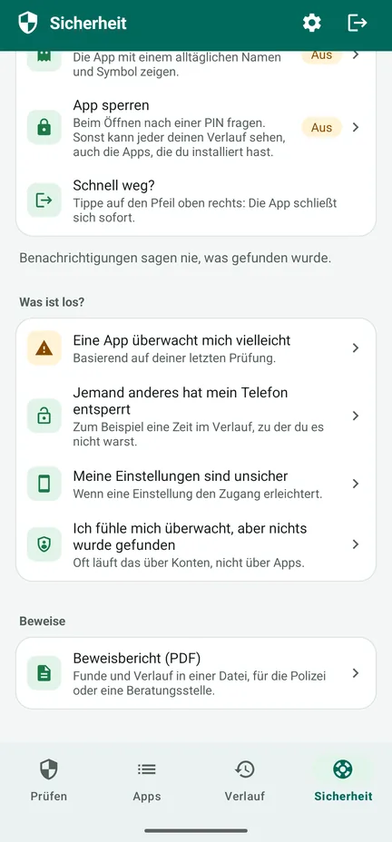
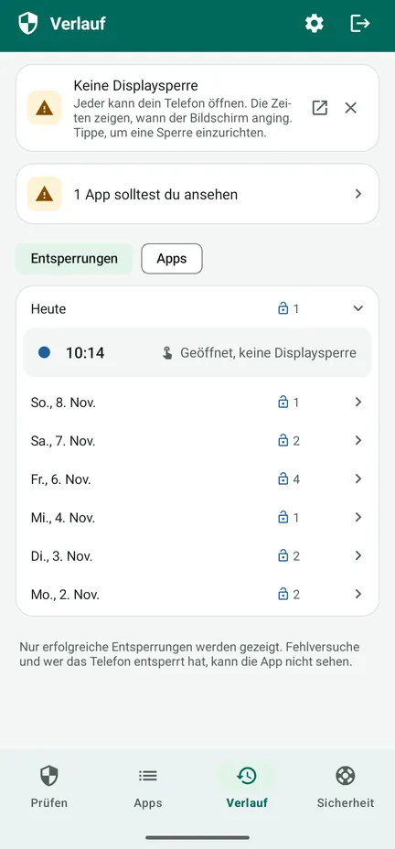

Wird dein Handy überwacht?
SpywareMonitor prüft, welche Apps auf deinem Android-Telefon genutzt werden könnten, um dich auszuspionieren – und erklärt in einfachen Worten, warum.
Für alle, die fürchten, dass ein Partner, eine Partnerin, der oder die Ex oder jemand anderes sie heimlich über das Handy verfolgt. Kein Internet, keine Werbung, kein Konto: Nichts verlässt dein Telefon.
Jetzt bei Google Play Schritt für Schritt erklärt (auf Englisch)
Kostenlos bei Google Play für Android 8 und neuer, mit einem freiwilligen Pro-Upgrade zum einmaligen Preis. In 10 Sprachen, auch auf Deutsch.

Bekannte Stalkerware
132 Stalkerware-Apps, erkannt an Name und Signaturzertifikat.
Versteckte Apps
Apps ohne Symbol oder mit einem Namen, der so tut, als gehöre er zu Android.
Apps, die mitlesen können
Apps, die deinen Bildschirm oder deine Benachrichtigungen lesen oder Geräteadministrator sind.
Telefoneinstellungen
Keine Displaysperre, USB-Debugging oder andere Einstellungen, die den Zugang leicht machen.
Sichere nächste Schritte
Was du tun kannst, in einer sicheren Reihenfolge, damit die andere Person nichts merkt.
Nichts verlässt dein Telefon
Keine Internetberechtigung: keine Werbung, kein Tracking, kein Konto.
So sieht es aus
Sieh dir die 83-Sekunden-Tour an (auf Englisch) – wie die App dein Telefon prüft, was Orange und Rot bedeuten und was du dann tun kannst – oder schau dir die Bildschirme an. Auf YouTube ansehen



Kostenlos: die Prüfung
- Prüft jede App und vergleicht sie mit der Liste bekannter Stalkerware
- Orange: Zugriffe, die missbraucht werden könnten – oft harmlos, also sieh sie dir zuerst in Ruhe an. Rot: bekannte Stalkerware.
- Die Gründe zu jeder App und wer sie entwickelt hat
- Telefoneinstellungen, jeweils mit einem Knopf, um es zu beheben
- Der Tab Sicherheit: Schritte für deine Situation, in einer sicheren Reihenfolge
- Schnell raus: Der Pfeil oben rechts schließt die App sofort
Pro: einmal zahlen, kein Abo
- Automatisch prüfen, jede Stunde, mit einem Schalter. Eine Benachrichtigung sagt nie, was gefunden wurde – nur den Namen der App und „Zum Öffnen tippen“ – und kann eine Stunde warten („Erst nach einer Stunde melden“).
- Entsperrprotokoll: wann dein Telefon entsperrt wurde, damit du merkst, ob jemand anderes es benutzt hat
- Verlauf: wann welche App installiert wurde, Zugriff bekam oder entfernt wurde
- Beweisbericht (PDF) in der Sprache der App, für die Polizei oder eine Beratungsstelle
- Tarnen und sperren: Zeig die App als Notizen, Wetter, Rezepte oder Planer, mit PIN oder Fingerabdruck
Dein Verlauf wird schon in der kostenlosen Version festgehalten. Die Kaufbestätigung von Google per E-Mail und deine Bestellhistorie bei Google Play nennen die App beim Namen.
Empfohlene Einrichtung: die App in 5 Schritten schützen (auf Englisch)
Bevor du etwas entfernst
- Wenn du Spyware entfernst, merkt die Person, die sie installiert hat, das vielleicht. Denk zuerst an deine Sicherheit.
- Sichere Beweise: den Beweisbericht, Screenshots oder Fotos mit einem anderen Telefon.
- Sprich mit jemandem, dem du vertraust, mit der Polizei oder einer Beratungsstelle – am besten von einem Telefon aus, das nicht überwacht wird. In den meisten Ländern gibt es ein kostenloses Hilfetelefon bei häuslicher Gewalt oder Missbrauch.
- Ändere wichtige Passwörter von einem anderen Gerät aus.
- Bist du in akuter Gefahr, ruf den Notruf in deinem Land an.
Der Tab Sicherheit in der App führt dich Schritt für Schritt durch deine Situation. Lies, was zu tun ist, wenn etwas gefunden wurde (auf Englisch), und schütze zuerst die App selbst (auf Englisch): Tarne sie und sperre sie mit einer PIN.
Die Einzelheiten
Was die App alles prüft
- 132 bekannte Stalkerware-Apps (Name und Signaturzertifikat)
- Apps ohne Symbol in der App-Übersicht
- Bedienungshilfen, Zugriff auf Benachrichtigungen und Geräteadministrator
- Apps, die aus einer Datei oder einer anderen Quelle statt aus einem App-Store installiert wurden
- Riskante Kombinationen, etwa Standort im Hintergrund zusammen mit Mikrofon und SMS
- Displaysperre, USB-Debugging, Entwickleroptionen, Apps, die andere Apps installieren dürfen, ein Telefon, das jemand anderes verwaltet
- Anzeichen, dass das Telefon gerootet ist – nur angezeigt, wenn welche gefunden werden
Datenschutz, den du selbst prüfen kannst
SpywareMonitor hat keine Internetberechtigung und kann deshalb nichts irgendwohin senden. Seine Daten sind von der Cloud-Sicherung ausgenommen. Die Liste bekannter Stalkerware ist in die App eingebaut und wird mit der App aktualisiert. Datenschutzerklärung (auf Englisch).
Ehrlich über die Grenzen
Kein Scanner kann versprechen, dass ein Telefon zu 100 % sauber ist. Apps in einem Arbeitsprofil und Spyware auf einem Telefon mit gut verstecktem Rooting kann keine normale App sehen. SpywareMonitor sagt dir, wenn es Anzeichen von Rooting findet. Überwachung kann auch über Konten laufen, ganz ohne App.
Sprachen und Telefone
10 Sprachen: Deutsch, Englisch, Norwegisch, Niederländisch, Französisch, Spanisch, Polnisch, Chinesisch, Hindi und Arabisch. Android 8 und neuer.
Häufige Fragen
Wie erkenne ich Spyware auf meinem Android-Handy?
Achte auf Apps, die du nicht kennst und die in der App-Übersicht versteckt sind, deinen Bildschirm (Bedienungshilfen) oder deine Benachrichtigungen lesen können, Geräteadministrator sind oder aus einer Datei statt aus dem Play Store installiert wurden. SpywareMonitor prüft all das und vergleicht deine Apps mit einer Liste von 132 bekannten Stalkerware-Apps.
Sendet SpywareMonitor meine Daten irgendwohin?
Nein. Die App hat keine Internetberechtigung, also kann nichts dein Telefon verlassen. Es gibt kein Konto, keine Werbung und keine Analysedienste.
Soll ich Spyware sofort entfernen?
Wenn du sie entfernst, merkt die Person, die sie installiert hat, das vielleicht. Denk zuerst an deine Sicherheit, sichere Beweise und sprich mit jemandem, dem du vertraust, mit der Polizei oder einer Beratungsstelle – am besten von einem Telefon aus, das nicht überwacht wird.
Findet SpywareMonitor jede Art von Spyware?
Das kann kein Scanner versprechen. Apps in einem Arbeitsprofil und Spyware auf einem gerooteten Telefon kann keine normale App sehen. SpywareMonitor sagt dir das ehrlich und zeigt, was es prüfen kann.
Ist SpywareMonitor kostenlos?
Die Prüfung, die Telefoneinstellungen und die Sicherheitsschritte sind kostenlos. Pro kostet eine einmalige Zahlung, kein Abo, und bietet zusätzlich automatische Prüfungen mit unauffälligen Benachrichtigungen, den Verlauf, ein Entsperrprotokoll, einen Beweisbericht als PDF sowie Tarnung und PIN-Sperre für die App.
Kann ich SpywareMonitor auf meinem Telefon verstecken?
Mit Pro kannst du die App als Notizen, Wetter, Rezepte oder Planer tarnen und mit einer PIN sperren. Ihre Benachrichtigungen sagen nie, was gefunden wurde. Der Pfeil oben rechts schließt die App sofort. Die Kaufbestätigung von Google per E-Mail und deine Bestellhistorie bei Google Play nennen die App allerdings beim Namen.
Ich fühle mich überwacht, aber nichts wurde gefunden. Was jetzt?
Oft läuft die Überwachung über Konten, nicht über Apps. Beende die Standortfreigabe in Google Maps, prüfe die Geräte in deinem Google-Konto sowie deine Wiederherstellungs-E-Mail und -Nummer und suche nach einem versteckten Tracker. Ändere deine Konten von einem anderen Gerät aus. Mehr dazu in der Hilfe (auf Englisch).
Ratgeber: Spyware auf Android
Hilfe Schritt für Schritt
Weitere Apps von Nordic Appworks
UpdateMonitor — ein Verlauf aller App-Updates, Installationen und Deinstallationen auf deinem Telefon, mit geänderten Berechtigungen. RebootMonitor — wann dein Telefon zuletzt neu gestartet wurde. Wie SpywareMonitor: ohne Internet und ohne Werbung.
Kontakt
Fragen oder Feedback: support@spywaremonitor.app
Die Liste bekannter Stalkerware stammt aus den Stalkerware-Indikatoren von Echap, lizenziert unter CC BY 4.0.